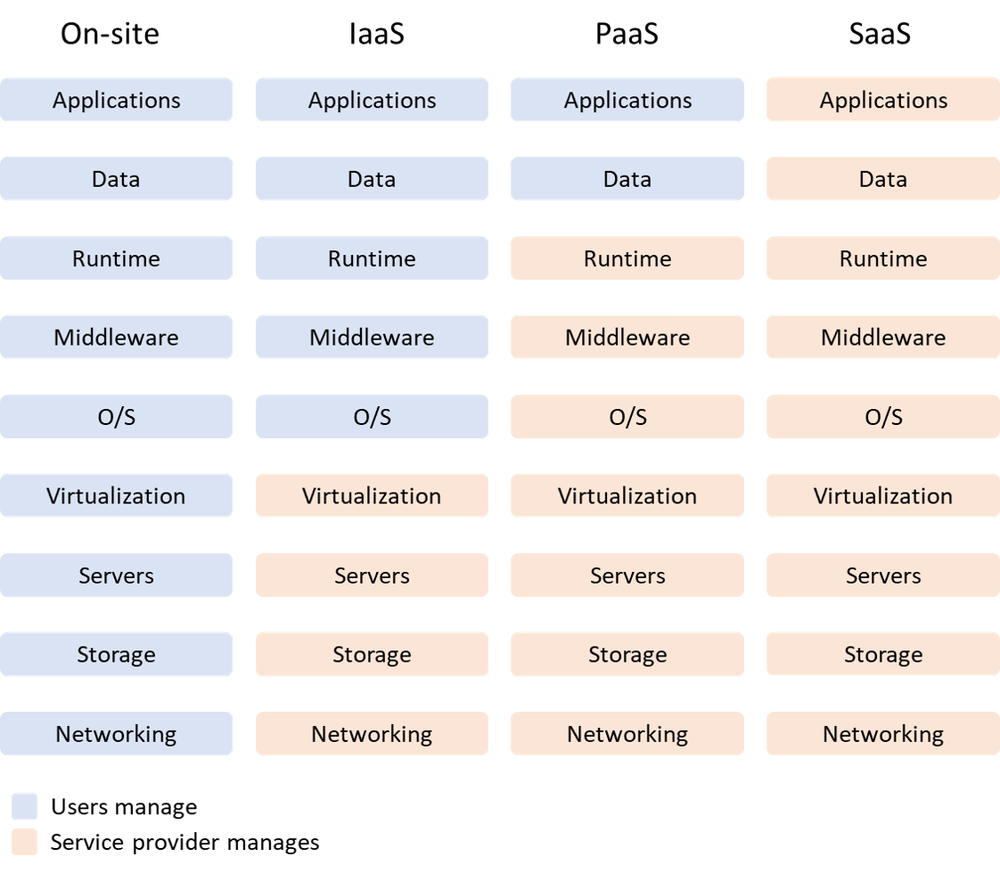

Every day, more and more new organizations decide to adopt the Cloud Computing paradigm. The adoption of this paradigm imposes some changes in company organizations, introducing new challenges and opportunities.
In this article, I would like to discuss the Cloud computing definition, opportunities and impacts on IT governance. After, we will follow a path that conducts us to build a Cloud computing governance, putting in evidence the principal aspects to consider during the adoption of the Cloud computing paradigm.
Cloud computing
Cloud computing, or Cloud, it’s a paradigm of on-demand services from a provider to a client through the internet web.
This model allows to drastically simplify the management of the IT systems, transforming the physical infrastructure to virtual services available on needed consume.
Today, we can identify these typologies of cloud computing:
- Public cloud: claimed and managed by specialized organizations in the cloud. They supply through the internet computing resources. Microsoft Azure, Amazon AWS, Google Cloud Platform, are examples of public cloud;
- Private cloud: a private cloud is referring to resources of cloud computing only from one company or association. A private cloud can be site in the company Data Center;
- Hybrid cloud: these types o cloud, unify public and private cloud. They allow moving data and workloads from the private and public cloud.
The opportunities of Cloud computing
Cloud computing offers various advantages:
- Cost calibration: using service models like IaaS, PaaS and SaaS, the companies can adjust their cost on the resources used (pay for use). Furthermore, you can reduce the compressive cost connected to the physical Data Center location on-premises (rent, power, physical security and others);
- Security: the main public Cloud provider offers a very high level of security for their system. They continuous make security updates on their platform (if you use the PaaS or SaaS model), guarantee the physical security of their Data Center, advance technologies for data protection, and usually, are compliant with the most important security standards;
- Flexibility: it’s one of the most strong features of the Cloud. The cloud allows you to scale up your resource theoretically infinitely when the resources demand are growing;
- Reliability and availability: the cloud enables the possibility to make services with a high level of reliability and business continuity;
- Innovation: it makes easy access to modern and innovative technologies to use within your services.
Features of cloud service
To better understand what are the impacts on IT governance, we need to identify which are the features of Cloud computing services. The National Institute of Standards and Technology (NIST) define six different features:
- On-demand self-service: a user of services can, independently, carry out the procurement of resources of cloud computing, like example storage space and server time, as needed automatically without requiring human interaction with the service provider;
- Broad network access: capabilities are available over the internet, with standard API and with a different client (es smartphone, laptops, etc.);
- Resource pooling: services and resources available on the provider, are organized in a multi-tenant model for serving different users, using both virtual than physical resources dynamically allocated to meet the needs of applications. The allocated resources are independent of physical location and users doesn’t have direct control over them but they can specify on a high level the geographical location;
- Rapid elasticity: the resources can be elastic provisioned, often also automatically, to ensure high scalability both outward and inward. From the users perspective, the resources look infinite, and it is given to them the opportunity to buy at any time;
- Measured service: a Cloud system, automatic monitoring and optimizing resources to use based on the type of service (es. Storage, compute, network bandwidth). Used resources can be monitored, controlled and connected ensuring transparency between users and providers.
Impact on the IT governance
Now that we know the features of cloud computing, what is the impact on IT governance? These features introduce some consideration about traditional service administration and management on-premises.
On-demand self-service
- The organization can accelerate the application deployment process.
- The easy access to the demand for new resources involves more control over cost budget, management and tracking of their use.
- The hardware lifecycle it demanded to the cloud service provider.
Broad network access
- Authentication and authorization impact.
- IAM management and integration with organization authorization.
- Communication between the cloud service provider and IT member of the organization.
- Operational Level Agreements (OLAs)
Resource pooling
- Security.
- Legal aspect to be compliant with local law.
Rapid elasticity
- With the easy and virtual infinity possibility of resource demand, great attention is putting on cost budget.
Measured service
- Service Level Agreements (SLAs)
- Management billing of the consumed services.
Moreover, the level of the impact depends also on the Cloud model that is adopted like Infrastructure as a Service (IaaS), Platform as a Service (PaaS) or Software as a Service (SaaS).

Conclusion
As we have seen, the introduction of cloud computing into the organization has an impact on roles, responsibilities, processes and measures. Without appropriate governance that provides guidelines for risks mitigation, delivering efficient services, the organizations can be in trouble and fail to achieve cost-saving and a good service offering level. The Cloud governance should operate and be integrated with the actual organization IT governance, extending this one with its characteristics.
Now that we know what are the impacts on IT governance, we can try to understand how to build a Cloud computing governance. We will see how in the next articles.
References
- ISO/IEC 17788:2014: Information Technology – Cloud Computing – Overview and Vocabulary; (www.iso.org/iso/catalogue_detail?csnumber=605455)
- ISO/IEC 17789:2014: Information Technology – Cloud Computing – Reference Architecture; (www.iso.org/iso/catalogue_detail?csnumber=60545)
- National Institute of Standards and Technology (Special Publication 500‐291)